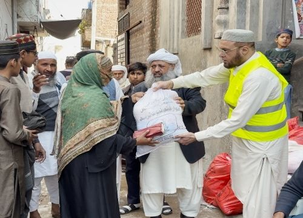
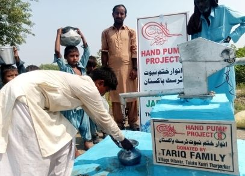
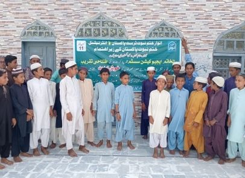
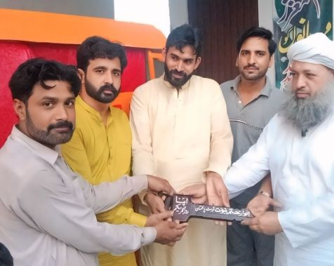
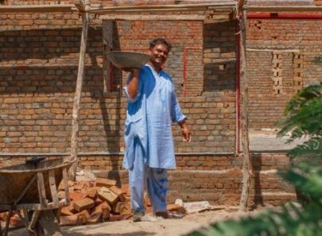
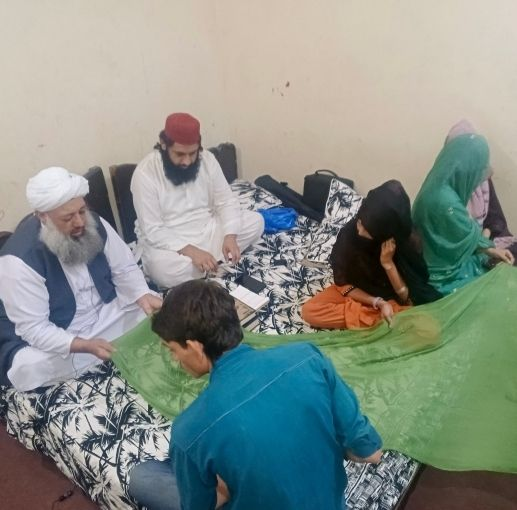

ایک نئی امید — انسانوں کے لیے بھی، ایمان کے لیے بھی
چناب نگر سے اندرونِ سندھ تک، اے کے این ٹرسٹ ضرورت مندوں کی خدمت، نو مسلمین کی کفالت، بچوں کی تعلیم اور عقیدۂ ختم نبوت ﷺ کے دفاع میں مصروف ہے — راشن، پانی، مکانات، مکاتب اور علاج کے ذریعے۔

”انسانوں میں سب سے بہتر وہ ہے جو انسانوں کو سب سے زیادہ نفع پہنچائے۔“
حدیث — المعجم الاوسط
خدمت جو حقیقی زندگیوں تک پہنچتی ہے
ہر روپیہ راشن، پانی، تعلیم، چھت اور عزتِ نفس میں بدلتا ہے — نو مسلمین، بیواؤں اور یتیموں کو اوّلیت کے ساتھ۔
خدمت کے تیرہ راستے
دعوت سے پینے کے پانی تک، ہر شعبہ ایمان کے تحفظ اور عزتِ نفس کی بحالی کے لیے قائم ہے۔

تقسیمِ راشن
ماہانہ راشن پروگرام، اب تک 90,000+ افراد تک — ایک خاندان کے پیکج کی لاگت ₨ 6,000 ہے۔
مزید پڑھیے ←
فراہمیٔ آب
تھرپارکر میں کنویں اور پمپ، چناب نگر میں ہینڈ پمپ، پنجاب میں فلٹریشن پلانٹس۔
مزید پڑھیے ←
قرآنی مکاتب
13 مکاتب میں 2,000+ بچے زیرِ تعلیم — لاہور، چناب نگر، پنجاب اور سندھ۔
مزید پڑھیے ←
روزگار
نو مسلمین کے لیے رکشے، سلائی مشینیں، ملازمتیں اور کاروبار کے لیے قرضِ حسنہ۔
مزید پڑھیے ←
اپنا گھر اپنی جنت
نو مسلمین اور بیواؤں کے لیے ملکیتی حقوق کے ساتھ مکانات، نیز کرایہ معاونت۔
مزید پڑھیے ←
دعوتِ اسلام
اخلاص کے ساتھ نبوی طریق پر دعوت — سینکڑوں نے اسلام قبول کیا۔
مزید پڑھیے ← زیرِ تعمیر · آغاز 2025
زیرِ تعمیر · آغاز 2025
رفیق میڈیکل سینٹر
ایسی بستی کے لیے فلاحی ہسپتال جس کے پاس کوئی نہیں — آؤٹ ڈور کلینک، آپریشن تھیٹر، گائنی سینٹر، لیبارٹری، کلر ڈاپلر الٹراساؤنڈ اور میڈیکل سٹور، مع ایمبولینس سروس۔
پہلا لینٹر ₨ 1,25,00,000 کی لاگت سے مکمل ہو چکا ہے؛ پورے منصوبے کا تخمینہ تقریباً ₨ 5,00,00,000 ہے۔ ایک اینٹ، ایک کمرہ یا پورا وارڈ اپنے ذمے لیجیے:
اسلامی سہولیات، سائٹ میں شامل
آپ کے شہر کے اوقاتِ نماز، فون سے سمتِ قبلہ، جیب میں تسبیح، اور مستند دعائیں اور احادیث — اردو اور انگریزی میں۔
اوقاتِ نماز
آپ کے شہر کا روزانہ اور ماہانہ نقشہ، حنفی یا عام عصر۔
کھولیے ←سمتِ قبلہ
آپ جہاں بھی ہوں، کعبہ کی سمت اور زاویہ۔
کھولیے ←تسبیحات
سنت اذکار اور ان کے فضائل کے ساتھ ڈیجیٹل تسبیح۔
کھولیے ←دعائیں
عربی، تلفظ، اردو اور انگریزی کے ساتھ مستند دعائیں۔
کھولیے ←احادیث
منتخب مستند روایات، بشمول مہرِ ختم نبوت ﷺ۔
کھولیے ←اسماء الحسنیٰ
اردو اور انگریزی معانی کے ساتھ اللہ کے ننانوے نام۔
کھولیے ←زکوٰۃ کیلکولیٹر
سونے یا چاندی کے نصاب سے اپنی زکوٰۃ نکالیے۔
کھولیے ←زکوٰۃ دیجیے
آپ کی زکوٰۃ مستحقین تک پہنچتی ہے — گھر سے وصولی کی سہولت کے ساتھ۔
کھولیے ←”اعمال کا دارومدار نیتوں پر ہے۔“
بخاری 1 · مسلم 1907
فلڈ ریلیف 2025
جب سیلاب آیا تو اے کے این کی ٹیمیں تیرہ شہروں اور علاقوں تک پہنچیں — بونیر اور مینگورہ سے شکرگڑھ اور قصور تک — 1,290 خاندانوں کے لیے راشن، 10,600 افراد کے لیے پکا ہوا کھانا، ₨ 15,00,000 نقد امداد، ہینڈ پمپ، چارپائیاں اور 265 کمبل لے کر۔
مکمل ریلیف رپورٹ دیکھیےآپ کا عطیہ، آپ کے دروازے سے وصول
کال یا واٹس ایپ کیجیے — ہماری ٹیم آپ کے گھر سے آپ کی زکوٰۃ، صدقہ یا عطیہ وصول کرے گی — نقد یا چیک۔ اللہ آپ سے قبول فرمائے۔